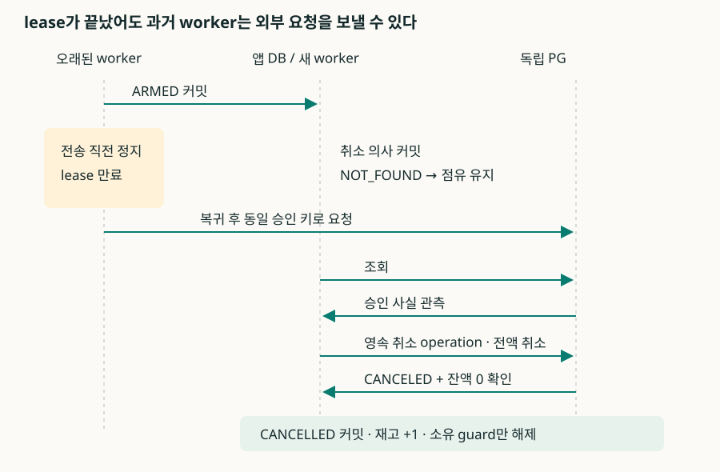

01 / CORRECTNESS BEFORE SPEED
결제 결과 불명 상태의 복구와 재고 반환 조건
모구시장은 한정 수량을 예약한 뒤 결제하는 공동구매 서비스다. PG 승인 응답을 받지 못하면 서버에서는 승인 실패와 응답 유실을 구분할 수 없다. 이때 재고를 반환하면 이미 결제한 상품이 다른 고객에게 배정될 수 있다. 승인 여부를 조회해 구매를 확정하거나, 수락한 취소를 완료할 때까지 해당 재고를 유지하도록 구현했다.
재고와 구매·취소 의사는 MySQL에 저장하고, PG 호출 전에 실행 허가와 재사용할 멱등키를 커밋한다. 만료 작업이 반환하는 대상은 결제를 접수하지 않은 HELD 예약이다. PAYMENT_PENDING은 외부 명령이 실행되지 않았음을 보장하거나, 반환 가능한 PG 종결 상태를 확인해야 해제한다.
재고·사용자 제약과 결제 상태 전이
판매 회차(saleId)를 거래 단위로 삼았다. 회차가 시작되면 가격과 공급량은 고정된다. 사용자 한 명은 같은 회차에 활성 예약을 하나만 가질 수 있고, 구매한 회차를 다시 구매할 수도 없다. 구현 범위는 이 거래 경로이며 회원가입·검색·배송·장바구니는 포함하지 않았다.
API 성공 응답은 처리 단계별로 의미가 다르다. 예약 성공은 DB에 수량 배정이 커밋된 상태, 결제 접수는 결제 시도와 복구 작업이 저장된 상태다. 구매 완료는 해당 거래의 PG 승인을 검증하고 내부 구매 상태까지 커밋한 경우에만 반환한다. 따라서 201·202·200 응답을 합친 HTTP 성공률과 실제 구매 성공률을 별도로 집계했다.
S = A + H + P
S: 회차 초기 공급량 A: 판매 가능 수량
H: HELD + PAYMENT_PENDING (REVIEW·취소 진행 포함)
P: PURCHASED
HELD → PAYMENT_PENDING : H 내부 이동, A 변화 없음
PAYMENT_PENDING → PURCHASED : H → P, 재고를 다시 빼지 않음
안전한 CANCELLED / EXPIRED : H → A, 한 번만 반환재고 보존식은 MySQL의 일관된 스냅샷에서 검사한다. PG의 승인·취소 효과는 별도 원장에서 예약과 결제 시도에 연결해 대조한다. PG에서는 승인됐지만 앱이 아직 pending인 상태는 대사 대상이다. 재고가 계속 점유돼 있다면 이 불일치만으로 초과 판매가 발생한 것은 아니다.

PG 호출 전후의 트랜잭션 분리
기준 구현은 Spring Boot·JDBC·MySQL을 사용한다. 사용자별 중복을 제한하는 guard 행, 재고 차감, 예약, 최초 요청 결과를 하나의 DB 트랜잭션에 저장했다. 참고 프로젝트는 Redis에서 먼저 선점하고 별도로 DB에 저장했지만, 여기서는 두 저장소 사이의 보상 처리를 추가하지 않고 MySQL 안에서 배정을 끝내는 기준 구현을 새로 작성했다. 과거 운영 코드와는 별도의 구현이다.
같은 사용자·작업·대상·멱등 키를 요청 결과의 유일 키로 삼는다. 요청 내용을 정규화해 해시를 저장하고, 같은 키에 다른 수량이나 금액이 오면 충돌로 거절한다. 성공한 예약이 나중에 만료돼도 같은 키가 새로운 배정을 만들지 않는다. 최초 응답과 현재 리소스 상태는 서로 다른 조회 결과다.
요청 결과 잠금 → 사용자 guard 잠금 → 회차 재고 잠금
→ 잠금을 얻은 뒤 DB 시각으로 판매 기간 확인
→ UPDATE sales SET available = available - 1
WHERE id = ? AND available > 0
→ HELD + checkout_order_id + guard + 최초 응답 저장
→ COMMIT → 예약 응답판매 종료 시각은 재고 잠금을 획득한 뒤 검사한다. 잠금 대기 전에 평가한 시각으로 판매 가능 여부를 판단하면, 기다리는 동안 마감된 요청도 받아들일 수 있다. 재고 행을 먼저 잠그고 다음 쿼리에서 DB 시각을 읽도록 했으며, 실제 행 잠금을 유지한 채 마감 시각을 넘긴 시험에서 SALE_CLOSED를 확인했다.
결제는 한 번의 로컬 트랜잭션으로 끝나지 않는다. 첫 트랜잭션은 HELD를 PAYMENT_PENDING으로 바꾸면서 예약에 이미 저장된 주문번호·서버 가격·paymentKey를 결합한다. 하나의 예약에 하나의 시도, 상점 범위에서 하나의 paymentKey라는 유일성을 적용한다. 워커는 다음 트랜잭션에서 실행 허가를 확인하고 ARMED를 커밋한 뒤에 HTTP를 호출한다.
| 경계 | 영속 사실 | 죽었을 때의 복구 |
|---|---|---|
| T1: 접수 | attempt + CONFIRM(PREPARED) + due 시각 | 스캔이 발견한다. 새 논리 시도를 만들지 않는다. |
| T2: 허가 | ARMED + 최초 허가 시각 + 안정적인 외부 키 | 보냈는지 알 수 없는 상태다. lease만 보고 반환하지 않는다. |
| 외부 HTTP | PG만 승인·취소 효과를 소유 | DB 커넥션을 잡지 않고 기다린다. 응답 유실은 조회 대상이다. |
| T3: 반영 | 검증된 관측 + 현재 의사 + 구매 또는 안전한 반환 | 커밋 응답을 잃어도 원래 ID로 현재 상태를 확인한다. |
Ledger는 예약·재고·멱등 결과를 변경하고, Recovery는 작업 선점과 외부 실행 허가, PG 응답 검증, 복구를 담당한다. 선점 트랜잭션을 짧게 종료한 뒤 업무 상태를 변경하는 트랜잭션을 시작한다. 기존 예약을 변경할 때의 잠금 순서는 guard→예약→시도/operation→재고→budget으로 통일했다. 새 예약 INSERT의 ID는 커밋 전까지 다른 워커에게 보이지 않는다. Ledger · Recovery
lease 만료 후에도 실행될 수 있는 PG 요청
워커가 ARMED를 커밋한 직후 정지하는 경우를 재현했다. lease를 인계받은 새 워커의 PG 조회가 NOT_FOUND여도 재고를 반환할 수 없다. 이전 워커가 재개되면 이미 허가받은 승인 HTTP를 보낼 수 있기 때문이다. DB generation 검사는 오래된 워커의 내부 상태 반영을 차단하지만, 외부 네트워크로 나간 요청을 취소하지는 못한다.

취소와 승인 실행이 경쟁할 때는 ARMED 전환 전에 취소가 확정됐는지를 검사한다. 명령이 PREPARED인 상태에서 취소가 먼저 잠금을 획득하면, 같은 트랜잭션에서 명령을 BLOCKED로 바꾸고 재고를 반환한다. ARMED 이후에는 취소 의사를 저장하고 승인 여부를 확인한다. 승인이 확인되면 별도 CANCEL operation과 고정 취소 키를 저장해 취소한다. 취소 응답 유실도 조회·대사로 처리한다.
정상 구매를 원하는 거래는 자동 취소하지 않는다. 승인 응답을 잃었더라도 CONTINUE이고 배정을 유지했다면 PURCHASED로 복구한다. 원래 예약 TTL이 지난 것은 취소 사유가 아니다. 취소와 구매 확정이 동시에 실행될 때는 같은 guard와 예약 잠금을 얻어 커밋한 순서가 승자를 결정한다. 구매 확정 후 일반 환불은 이번 범위 밖이다.
응답·조회·알림은 도착 순서를 신뢰할 수 없다. 상태를 숫자 순위로 덮어쓰지 않는다. paymentKey, 주문번호, 금액, 통화, 상점, 카드 수단을 확인하고, 완전 취소는 잔액 0까지 확인한다. 이미 종결한 취소에 과거 승인 응답이 도착해도 구매로 바꾸지 않는다. 구매 이후 외부 취소가 보이면 불일치를 REVIEW로 남기되 자동 재판매하지 않는다.
장애 재현과 요청·DB·PG 원장 대조
앱 API 응답만으로 정확성을 판정하지 않았다. 입력 하네스가 요청 키와 최초 결과를 기록하고, MySQL 일관 스냅샷과 별도 PG 효과 원장을 대조했다. PG 시뮬레이터 자체도 지연 효과가 저장된 뒤 프로세스를 종료하고 재기동하는 시험을 거쳤다. 승인·취소 호출 횟수와 효과 횟수는 구분한다.
| 시험 | 실행 경계 | 관측 |
|---|---|---|
| 승인 응답·알림 유실 후 재기동 | 승인 응답·웹훅 유실, 원래 TTL 경과, 앱 SIGKILL | 기존 시도를 찾아 구매 복구. 시스템 사유의 보상 취소 없음. |
| lease 인계 후 오래된 워커 복귀 | ARMED 뒤 worker 정지, 취소 의사, lease 인계, 옛 워커 복귀 | NOT_FOUND 동안 pending. 늦은 승인 뒤 취소 1·반환 1. |
| 취소 응답 유실과 늦은 승인 | 취소 효과 저장 뒤 응답 단절, 오래된 승인 알림 도착 | CANCELLED와 CANCELED_FINAL 유지. |
| 이전 워커의 늦은 상태 반영 늦은 HTTP | 승인 관측 직후 옛 worker 정지, 새 워커가 취소 완료 | 옛 응답은 generation 불일치로 업무 상태에 반영되지 않음. |
| 예약 쓰기 종료·승인 후 DB 중단 | 예약 쓰기 중 SIGKILL / PG 승인 뒤 실제 DB pause | 로컬 부분 쓰기는 롤백. 외부 승인은 회복 후 구매 반영. |
| 멱등 보존 기간·자격 변경 | 멱등 보존 기간 경과 또는 credential scope 변경 | 새 승인 키로 재실행하지 않고 REVIEW·점유를 유지. |
거래 계약, 확장 장애, 잠금·풀 포화 시험에서 앱 상태와 독립 PG 원장을 대조했다. 감사 종료 시 pending 1건이 남은 실행은 PG 멱등 보존 기간이 지난 거래다. 자동 재승인할 수 없는 사유를 원장에 기록하고 재고 점유를 유지했다. 계약 결과 · 확장 장애 결과 · 잠금·풀 경계 결과
미확정 결제의 재고 점유·복구 비용
PG 통신을 45초 동안 차단한 시험에서 결제 12건은 모두 pending을 유지했다. 30초가 지나면 REVIEW로 전환해 조회 빈도를 낮췄고, PG가 회복된 뒤 구매로 확정됐다. 별도 시험에서는 미해결 결제 256건이 차면 신규 결제 접수를 거절했다. 기존 미해결 거래를 실패로 종결하지 않고 신규 유입과 워커 동시 실행 수로 자원을 제한했다.
결과를 확인할 때까지 점유한 재고는 다른 고객에게 판매할 수 없다. 다음 글에서는 이 점유 시간과 조회 호출량을 측정한다. PG가 영구적으로 단절되면 자동 종결 시한을 정할 수 없으므로 미해결 행과 최소 tombstone을 TTL로 삭제하지 않는다. 운영용 장기 아카이빙은 구현하지 않았다. 웹훅 수신함은 저장 상한에 도달하면 명시적으로 거절하며, 미해결 결제의 주기 조회는 계속된다.
실제 PG의 멱등키 보존 기간에는 한도가 있다. 기간이 지난 뒤 같은 키를 다시 보내는 것만으로 중복 승인이 방지된다고 볼 수 없다. 최초 ARMED 시각을 저장하고 설정된 보존 기간을 넘기면 재승인을 차단했다. 시뮬레이터는 종결된 paymentKey를 영구 보존하므로 실제 PG와 이 조건이 다르다. 토스페이먼츠 인증·멱등성 계약
이어 읽기: 웹훅 조회 앞당김과 복구 비용 · 검증 범위와 독립 감사
후속 비교와 해석 범위
이 글 이후에는 종결 충돌 보존과 KRW 금액 검증을 공통 수정하고, 기존 두 구조와 만료 배치 구조를 결제 재시도·최초 결제 고객·재고 반환 조건에서 다시 비교했다. 아래 후속 글에 최신 결과가 있다. 앞선 결제 슬롯 관리 구조 비교의 15% 기준과 후속 비교의 사전 기준은 다르며, 서로 다른 조건의 결과를 합산하지 않았다. 결제 재시도·최초 결제 고객의 구매 결과·재고 반환 비교
후속 비교에서는 종결 거래의 외부 명령 허가 결함을 모든 비교군에 수정하고 사용자·버킷·행동·PG 장애 입력을 독립화했다. 100/400건·초를 각각 독립 3회 측정한 결과와 결함 수정은 아래 글에 정리했다. 선행 단계형 혼합 시험의 입력은 16개 버킷 중 결제 8개·취소 4개·만료 4개로 행동이 묶여 있어, 당시 수치와 선택은 그 조건에 한정해 해석한다. 선행 구매 결과와 해당 비교의 선택 · 종결 거래 결함과 수정